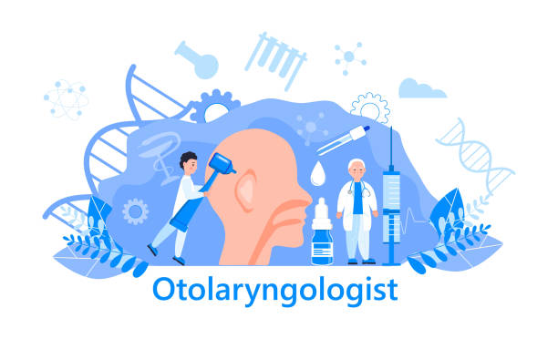

ENT Doctor in Thrissur
Care for problems of the ear, nose, throat and neck, for children and adults, from Dr Rejith R S and team.
MIDAS MERA: Maximising Effectiveness, Retaining Anatomy. Treat what's diseased. Protect what works.
Snoring or sleep apnoea
Child with mouth breathing
Vertigo or dizziness
Ear discharge or hearing loss
What does an ENT specialist treat?
Diseases of the ear, nose, throat and neck, including hearing loss, ear infections, vertigo, nasal blockage, sinusitis, snoring, voice problems, tonsil and adenoid problems, and thyroid swellings.
How is a patient assessed?
- We listen to your complaints and examine you. Endoscopy is often used to complete the examination.
- After a provisional diagnosis, we either start treatment or arrange tests.
- Tests may include blood tests, X-rays, scans, hearing tests, endoscopy or biopsy.
Treatment
- Procedures in the clinic, such as wax removal and vertigo correction manoeuvres
- Medicines for allergy, sinusitis, infections and voice problems
- Vestibular rehabilitation and voice therapy
- Surgery, mostly as day-care surgery: tonsils, adenoids, nasal septum, sinus and polyps, snoring, hole in the eardrum, voice problems and thyroid
Areas of practice
- Snoring and sleep apnoea clinic, for children and adults
- Endoscopic coblation adenoidectomy and intracapsular tonsil surgery
- Vertigo and balance clinic
- Endoscopic ear surgery
- Endoscopic nasal and septal surgery and nasal polyps
- Voice clinic (laryngology)
- Thyroid surgery
- Sialendoscopy for salivary gland problems
- Skull base surgery
- Headache and migraine clinic
Book a consultation
Call 81390 05150 or message on WhatsApp. See clinics and timings.